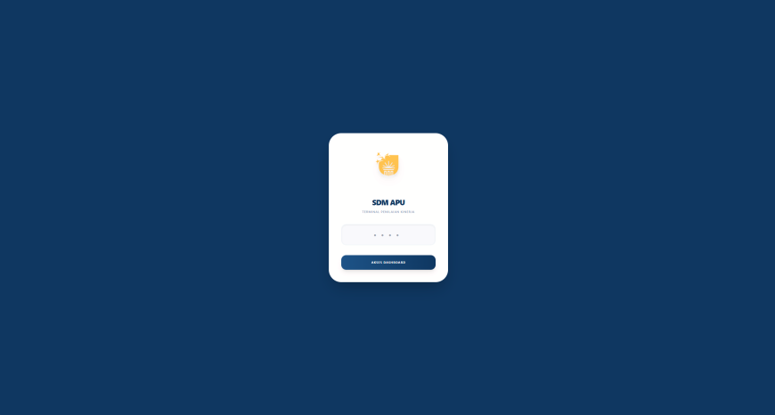
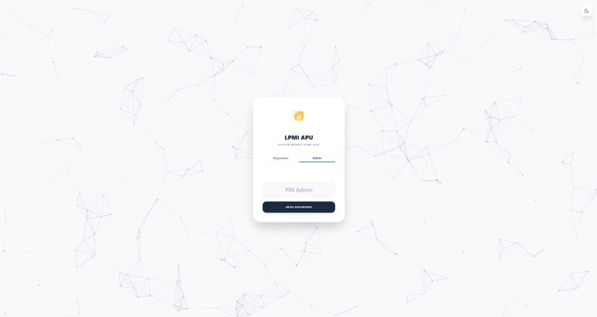

About Me
Hi, I'm Daffa Restu Fadhillah. A passionate tech enthusiast mainly focused on Front-End Development and UI/UX Design. I love building cool, responsive, and interactive web experiences.

Education

Dian Nuswantoro University
Bachelor of Informatics Engineering (S1 Teknik Informatika)
Studied core computer science principles, software engineering, algorithms, and computer systems. Specialized independently and academically in Front-End Development and UI/UX Design, focusing on building sleek, responsive, and user-centric web applications.
Work Experience
IT Help Desk Support
BBPJN JATENG — DIY
Provided technical assistance and IT troubleshooting to internal and external staff. Resolved hardware, software, network infrastructure, and operating system issues to ensure seamless daily computer operations.

Study Program Administration Staff
Agung Putra University
Managed daily academic department administration including archiving and reporting. Coordinated agenda scheduling for faculty management, handled incoming/outgoing correspondence, and maintained database accuracy.
LPPM Administration Staff & Cooperation (National)
Agung Putra University
Assisted daily institutional research administration, managed document archiving and report preparation, provided executive support to research committees, and handled official correspondence for national collaboration initiatives.
Projects

Employee Performance Appraisal System
An integrated Human Resource Management System featuring digital document archiving, employee evaluation tracking, and academic administrative automation for Agung Putra University.

Internal Quality Assurance Questionnaire System
An integrated academic survey and evaluation questionnaire platform designed for Agung Putra University's Internal Quality Assurance Board (LPMI), facilitating automated feedback collection, institutional auditing, and quality compliance tracking.